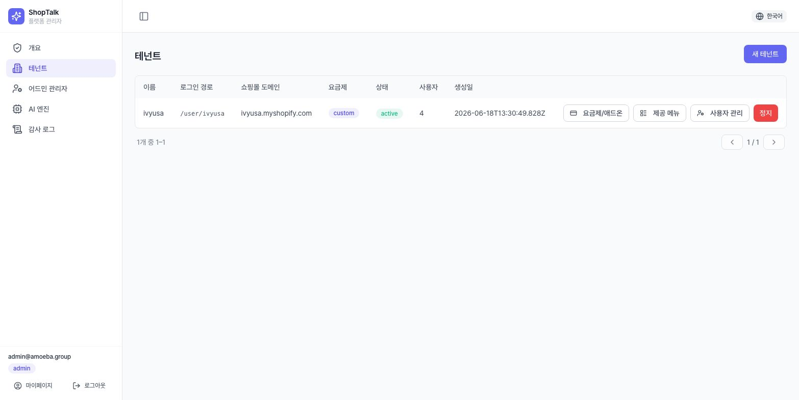
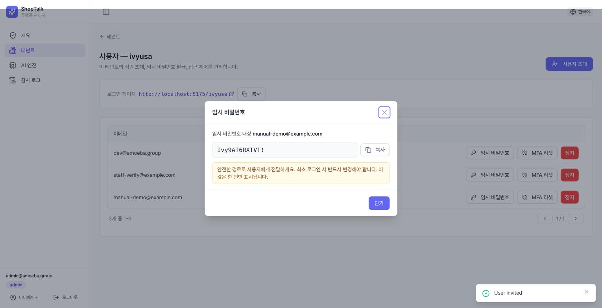
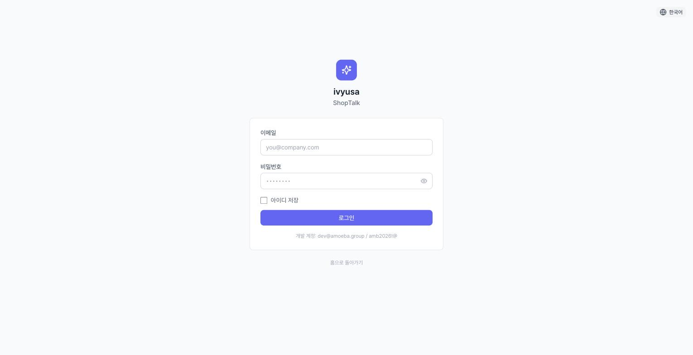
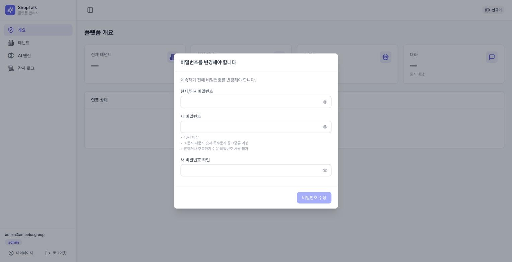
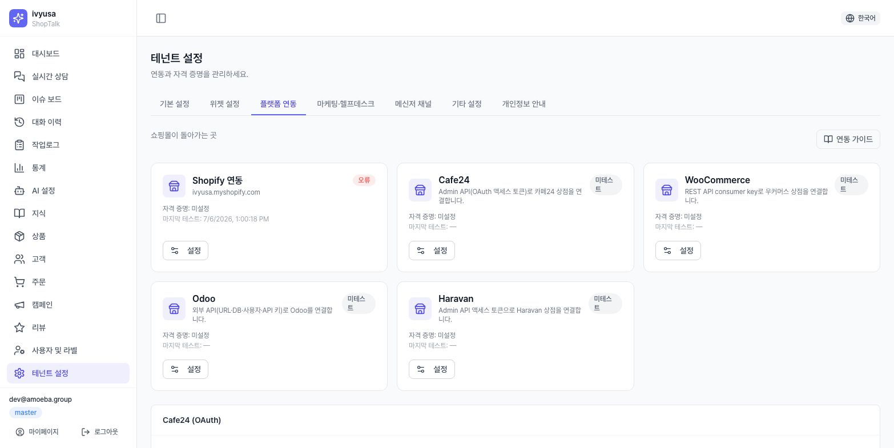
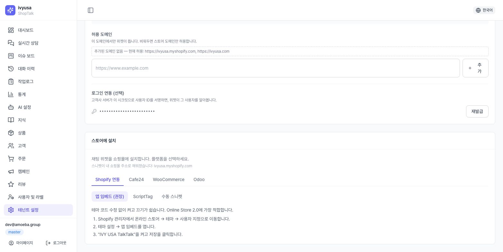
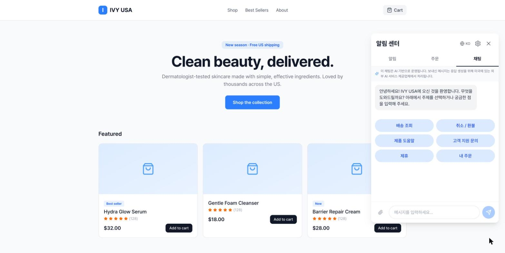
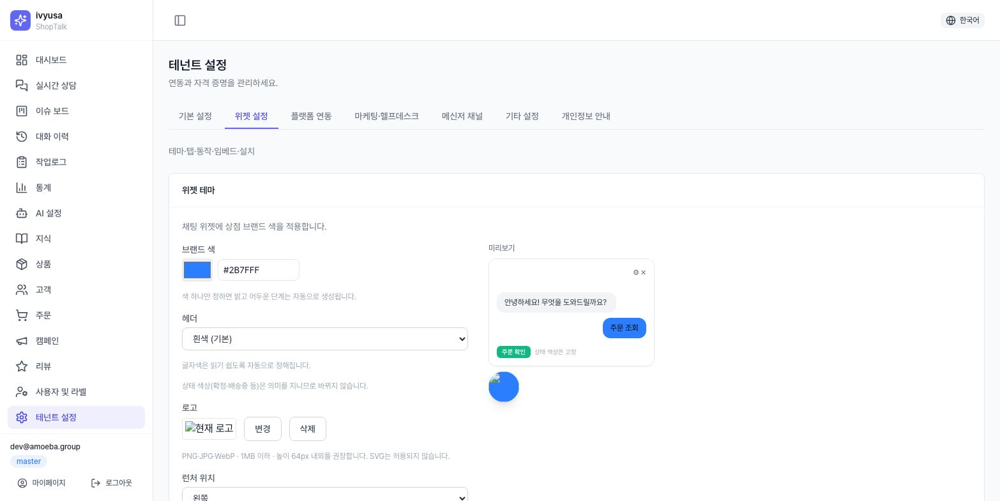

시작 전에
| 테넌트 | 샵톡에 입주한 하나의 상점. 데이터·설정·지식이 상점 단위로 완전히 분리됩니다. |
| 슬러그(slug) | 테넌트 전용 로그인 주소 조각. …/ivyusa처럼 주소 끝에 붙습니다. |
| 플랫폼 관리자 | /admin으로 로그인하는 샵톡 운영사 관리자. 테넌트 개설 권한을 가집니다. |
| 테넌트 관리자(master) | 상점 콘솔의 최고 권한 직급. 팀원·권한·설정 전체를 관리합니다. |
| 임시 비밀번호 | 초대 시 시스템이 발급하는 1회용 비밀번호. 화면에 한 번만 표시됩니다. |
준비물
- 플랫폼 관리자 계정 (
/admin/login) - 개설할 상점의 쇼핑몰 도메인 (예:
example.myshopify.com,mallid.cafe24.com) - 테넌트 관리자로 초대할 사람의 이메일 주소
- 연동할 플랫폼의 자격증명 (3장 — 테넌트 관리자가 준비)
테넌트 개설
1.1 새 테넌트 생성
/admin/tenants → [새 테넌트] → 모달에서 4개 필드를 입력합니다.
| 필드 | 필수 | 설명 |
|---|---|---|
| 이름 | ✅ | 상점 표시 이름 |
| 로그인 경로(slug) | — | 비우면 이름에서 자동 파생. 입력 시 자동 소문자화 |
| 쇼핑몰 도메인 | ✅ | 상점 대표 도메인 — 모든 플랫폼 공용 |
| 요금제 | ✅ | starter / growth / enterprise — 플랜에 따라 기본 제공 메뉴가 다름 |
소문자·숫자·하이픈만 가능하며, 콘솔 화면 이름(admin, login, dashboard, settings 등 예약어)과 겹칠 수 없습니다.
예약어를 입력하면 서버가 자동으로 -shop 접미를 붙입니다. 슬러그는 곧 로그인 URL이므로 상점이 기억하기 쉬운 값을 권장합니다.

1.2 (선택) 제공 메뉴 조정
테넌트 행의 [제공 메뉴] → 메뉴별 3단 선택: 플랜 따름(기본) / 강제 제공 / 차단.
결과 열이 즉시 바뀌고 예외 항목엔 *가 표시됩니다.
여기서 차단한 메뉴는 테넌트 master가 직급 권한을 줘도 보이지 않습니다(2계층: 어드민 제공 → 테넌트 내부 권한). 이슈 보드는 워크플로우 모드 설정도 함께 필요합니다.
1.3 테넌트 관리자 초대 + 임시 비밀번호 발급
- 테넌트 행의 [사용자 관리] → [사용자 초대]
이메일입력,직급은 기본값 master 유지(첫 관리자이므로)- [초대] → 즉시 임시 비밀번호 모달이 뜸 — 값을 복사
┌─ 임시 비밀번호 발급됨 ─────────────────────┐
│ user@shop.com 님의 임시 비밀번호 │
│ ┌────────────────────────┐ │
│ │ IvyXXXXXXXXX! │ [복사] │
│ └────────────────────────┘ │
│ ⚠️ 이 값은 지금 한 번만 표시됩니다. │
└────────────────────────────────────────────┘모달에 1회 표시되는 값을 관리자가 복사해 직접 전달해야 합니다. 창을 닫아 값을 잃었다면 해당 사용자 행의 [임시 비밀번호] 버튼으로 재발급하세요(이전 값은 무효화됩니다).

비밀번호를 이메일 본문이나 단체 채팅에 남기지 마세요. 1:1 보안 메신저나 전화로 전달하고,
첫 로그인(=강제 변경) 완료를 확인하는 것까지가 개설 절차입니다. 발급 이력은 감사 로그(/admin/audit)에 남습니다.
1.4 로그인 URL 전달
같은 화면 상단 카드의 로그인 페이지 URL(https://…/슬러그)을 [복사]해서 함께 전달하세요.
전달할 것 3가지 — ① 로그인 URL ② 이메일(계정 ID) ③ 임시 비밀번호
첫 로그인
2.1 로그인
전달받은 URL로 접속하면 상점 이름이 표시된 로그인 화면이 나옵니다. 이메일 + 임시 비밀번호로 로그인합니다.
"해당 매장을 찾을 수 없음"이 나오면 URL의 슬러그 철자를 확인하세요. 이메일 기억하기를 켜면 이 브라우저에서 다음부터 이메일이 채워집니다.

2.2 강제 비밀번호 변경
로그인 직후 닫을 수 없는 비밀번호 변경 창이 뜹니다(취소 불가 — 임시 비밀번호로는 콘솔을 쓸 수 없습니다).
- 현재(임시) 비밀번호 + 새 비밀번호 + 확인 입력
- 규칙 3가지가 실시간 ✓/✕ 표시: ① 최소 10자 ② 대문자·소문자·숫자·특수문자 중 3종 이상 ③ 흔한 비밀번호 아님
- 본인 이메일이 포함된 비밀번호, 직전과 같은 비밀번호는 서버에서 거부

2.3 MFA(2단계 인증) 등록
| TOTP | Google Authenticator 등 인증 앱이 30초마다 생성하는 6자리 코드 |
| 복구 코드 | 인증 앱을 잃었을 때 대신 쓰는 1회용 코드 10개 — 등록 직후 한 번만 표시 |
master·director 직급은 보안 정책상 MFA(TOTP) 등록이 강제됩니다. 시행일 전에는 상단 유예 배너(마이페이지에서 미리 등록), 시행일 후에는 등록 전까지 콘솔이 차단됩니다.
등록: QR 스캔(또는 수동 키 입력) → 앱의 6자리 코드 입력 → 복구 코드 10개 다운로드·보관 → 완료. 이후 로그인마다 6자리 코드를 추가 입력합니다.
반드시 저장하세요. 인증 앱과 복구 코드를 모두 잃으면 관리자(어드민 또는 상점 master)의 [MFA 리셋]으로만 풀 수 있습니다.
커머스 플랫폼 연동
| 자격증명 | 플랫폼 API 접근용 키·토큰. 암호화 저장되며 저장 후에는 "설정됨"으로만 표시 |
| 연결 테스트 | 저장한 자격증명으로 실제 API를 1회 호출해 유효성을 확인하는 버튼 |
| 동기화 | 플랫폼의 주문·상품 데이터를 샵톡 캐시로 가져오는 작업 |

3.1 Cafe24 — OAuth 연결(권장) ✅
- 설정 페이지의 Cafe24 연결 카드에서
몰 ID입력 (몰ID.cafe24.com의 몰ID 부분) - [연결] → Cafe24 인가 페이지 → 로그인·권한 승인 → 콘솔 자동 복귀
- 연결됨 배지 확인 후 [지금 동기화](주문) / [상품 동기화] 실행
상품 동기화는 상품 캐시까지만 채웁니다. 이 상품들을 AI가 답변에 쓰게 하려면 [지식] 화면의 카탈로그 동기화(미리보기→실행)를 별도로 실행해야 합니다 — 2편 매뉴얼 2.2장 참조. 토큰을 이미 보유했다면 스토어 연동 타일의 cafe24 모달에 수동 입력할 수도 있지만 OAuth 연결이 표준입니다.
3.2 Shopify ✅
스토어 연동 타일의 Shopify 모달: 쇼핑몰 도메인(필수, *.myshopify.com) ·
Admin API Access Token(필수) · API Key/Secret(선택).
저장 후 [연결 테스트] → [지금 동기화] → [웹훅 등록] 순으로 실행합니다. 웹훅을 등록해야 주문·배송 상태 변화가 실시간으로 위젯 알림에 반영됩니다.
3.3 Odoo — 자격증명·연결 테스트 ✅ / 실시간 동기화 🟡
odoo 타일 모달에 서버 URL / DB 이름 / 사용자명 / API Key를 입력하고 연결 테스트합니다.
실시간 데이터 동기화는 준비 단계입니다.
3.4 스토어프론트 URL
스토어프론트 카드에 상점의 고객용 사이트 주소를 입력하세요. 미설정 시 위젯의 상품 링크가 비활성화됩니다(카드에 경고 표시).
그 외 WooCommerce·Haravan(커머스), Klaviyo·Yotpo(마케팅), Gorgias(헬프데스크), 메신저 채널(텔레그램·Gmail 등)도 같은 방식의 타일/카드로 연동합니다.
채팅위젯 설정·설치
4.1 위젯 설치
설치 가이드 카드에서 플랫폼 탭(Shopify / Cafe24 / WooCommerce / Odoo)을 선택하면 해당 플랫폼용 설치 스니펫과 단계 안내가 나옵니다(모든 코드 블록에 복사 버튼).
- Shopify: 앱 임베드(권장) / ScriptTag / 수동 설치 3방식
- Cafe24: 몰 디자인에 붙여넣는 전용 스니펫(회원 로그인 경로 포함)
- WooCommerce:
functions.php용 PHP 스니펫 / Odoo: 범용 HTML 스니펫
임베드 & SDK 카드에서는 범용 설치 스니펫(embed.js) 복사,
허용 도메인 관리(비워두면 스토어프론트 URL 적용),
서명 시크릿(회원 신원 연동용) 생성을 합니다.
즉시 복사해 쇼핑몰 서버 담당자에게 전달하세요.

설치 후 실제 쇼핑몰 페이지를 열어 우하단 런처(말풍선 버튼)가 뜨는지 확인하는 것이 가장 확실한 검증입니다.

4.2 문구·동작 (위젯 동작 카드)
| 항목 | 설명 |
|---|---|
| 로그인 방식 | redirect(쇼핑몰 로그인 페이지로 이동 후 복귀, 기본) / popup |
| 타임존 | 상점 기준 시간대 — 영업시간 표시 등에 사용 |
| 표시 이름 | 위젯 헤더에 보이는 상점 이름 (최대 80자) |
| 첫 방문 인사 / 로그인 후 인사 | 언어 탭(EN/ES/KO)별 각각 작성 (최대 500자) |
인사말을 언어별로 비워두면 기본 문구가 나갑니다. 주력 언어 하나만 먼저 정성껏 쓰고 나머지는 나중에 채워도 됩니다.
4.3 탭·테마
위젯 탭 카드: 알림 / 주문 / 채팅 3탭 중 노출할 탭 선택(최소 1개 유지 — 마지막 1개는 해제 불가), 탭 위치는 상단/하단.
위젯 테마 카드: 브랜드 색상(피커/HEX) · 헤더 스타일(흰색/브랜드색) · 로고 업로드 · 런처 위치(좌/우)·크기(sm/md/lg)·아이콘(채팅/물음표/헤드셋/로고). 오른쪽 미리보기로 즉시 확인.
색은 브랜드 색 하나만 고르면 됩니다. 밝기 단계와 글자색은 대비 기준(4.5:1)에 맞춰 자동 계산됩니다. 저장한 테마는 고객의 다음 위젯 세션부터 반영됩니다.

AI 최소 설정
| 페르소나 | AI 상담봇의 말투·태도·원칙 서술 텍스트. 모든 AI 답변의 톤을 결정 |
| 응답 규칙 | AI가 반드시 지킬 규칙 목록 (한 줄 = 규칙 1개) |
| 엔진 | 답변을 생성하는 AI 모델. 플랫폼 관리자가 등록한 것 중 선택 |
| stub(스텁) | 실제 AI 키 없이 동작하는 데모 응답기 — 실서비스 품질이 아님 |
- 봇 페르소나 카드에 상점 소개·말투·금지사항을 서술하고 저장 (예: "OO몰의 친절하고 간결한 상담사입니다. 제공된 지식에서만 답하세요.")
- 응답 규칙에 최소 2~3개 등록 (예: "환불 완료를 단정하지 말 것")
- AI 기능 카드에서 적용 엔진 확인 —
stub배지가 보이면 실제 엔진 미연결. 플랫폼 관리자에게 엔진 등록(/admin/ai-engines)을 요청
시나리오 버튼(위젯 하단 빠른 메뉴)은 기본 6종(배송 조회·취소/환불·상품 도움말·고객 지원 문의·제휴·내 주문)이 자동 적용되므로 개설 단계에서 손대지 않아도 됩니다.

지식 최초 입력
AI는 등록된 지식에서만 답합니다. 지식이 없으면 대부분의 질문이 상담원에게 넘어가므로, 개설 단계에서 핵심 정책 문서 3~5건은 등록하세요.
- 문서 카드의 [문서 추가] → 제목 / 카테고리(자동완성) / 내용 입력 → 저장. 권장 최초 문서: 배송 정책 · 취소/환불 정책 · 교환/반품 절차 · FAQ. 저장 시 자동으로 검색 색인(임베딩)됩니다.
- 오른쪽 지식 QA 패널에 고객이 물을 법한 질문을 입력해 답변·출처·신뢰도 확인 — 방금 등록한 문서가 출처 목록에 뜨면 성공
문서 제목·본문에 고객이 실제 쓰는 표현(예: "배송 얼마나 걸려요")을 포함하면 검색 적중률이 올라갑니다. 상품 지식 대량 등록·외부 소스 연동·품질 관리는 2편 매뉴얼에서 다룹니다.

(선택) 팀원 초대·상담 전환
- 팀원 초대: [사용자] 메뉴 → [사용자 초대] → 이메일·직급(director/manager/staff)·직무 라벨 선택 → 1장과 동일한 임시 비밀번호 모달(1회 표시·직접 전달). 메뉴별 접근 권한은 [설정]의 메뉴 접근 권한 카드(master 전용)에서 직급별로 조정합니다.
- 상담 전환(핸드오프): [설정]의 상담 전환 섹션에서 담당 상담원·영업시간·영업시간 외 접수 이메일을 지정합니다 — 상세는 2편 매뉴얼 5장.
완료 체크리스트
- 테넌트 생성 + 관리자 초대·임시비번 전달 (어드민)
- 첫 로그인 → 비밀번호 변경 → MFA 등록
- 플랫폼 연동: 자격증명 저장 + 연결 테스트 통과 + (Shopify) 웹훅 등록
- 스토어프론트 URL 설정
- 위젯 스니펫 설치 → 실제 쇼핑몰에서 런처 표시 확인
- 표시 이름·인사말 작성
- 페르소나·응답 규칙 저장, AI 엔진
stub아님 확인 - 핵심 정책 문서 3건 이상 등록 → QA 패널로 답변 확인
- 위젯에서 직접 질문해 AI 답변 + 출처 표시 확인 (엔드투엔드)
문제 해결
- Q. 로그인이 안 됩니다 (임시 비밀번호).
- 임시 비밀번호는 재발급하면 이전 값이 무효화됩니다. 최신 발급본인지 확인하고, 안 되면 관리자에게 재발급을 요청하세요. 로그인 URL의 슬러그가 다른 상점 것은 아닌지도 확인하세요.
- Q. 임시 비밀번호 창을 닫아버렸습니다.
- 값은 다시 볼 수 없습니다. 사용자 행의 [임시 비밀번호] 버튼으로 재발급하세요.
- Q. 위젯이 쇼핑몰에 안 뜹니다.
- ① 스니펫이 실제 배포된 페이지에 있는지 ② 허용 도메인에 해당 도메인이 포함되는지 ③ 브라우저 캐시 새로고침 순으로 확인하세요.
- Q. AI 답변이 이상하게 기계적입니다.
- AI 기능 카드에
stub배지가 있는지 보세요. 스텁은 데모용 응답기입니다. 실제 엔진 등록을 요청하세요. - Q. AI가 자꾸 "상담원 연결"로 넘깁니다.
- 해당 주제의 지식 문서가 없거나 비활성 상태일 가능성이 큽니다. 6장대로 문서를 등록하고 QA 패널로 확인하세요.
- Q. 설정을 바꿨는데 위젯이 그대로입니다.
- 위젯 설정(문구·테마·탭)은 고객의 다음 세션부터 반영됩니다. 위젯을 닫았다 열거나 페이지를 새로고침하세요.